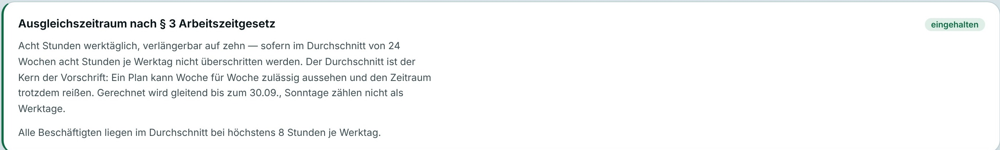

<!doctype html>
<html lang="de"><head><meta charset="utf-8">
<title>Ausgleichszeitraum</title>
<!-- Erklärfilm „Ausgleichszeitraum nach § 3 ArbZG“.
     window.seek(t) malt das Bild zur Zeit t; jedes Bild ist eine reine Funktion von t.
     window.TIMELINE enthält alle Beats, Bewegungen, Klangmarken und Untertitel.
     Parameter: ?f=16x9|9x16|1x1  ?rm=1 (reduzierte Bewegung)  ?cc=0 (ohne eingebrannte Untertitel) -->
<link rel="stylesheet" href="../brand/tokens.css">
<script src="vo-zeiten.js"></script>
<style>
* { box-sizing: border-box; margin: 0; padding: 0; }
html, body { background: var(--grund); overflow: hidden; }
body { font-family: var(--schrift); color: var(--ink); -webkit-font-smoothing: antialiased; }
#buehne { position: relative; overflow: hidden; background: var(--grund); }
.o { position: absolute; left: 0; top: 0; will-change: transform, opacity; }
.zelle { border-radius: 10px; display: flex; align-items: center; justify-content: center; font-family: var(--zahl); font-weight: 600; color: #fff; }
.zelle.dienst { background: var(--akzent); }
.zelle.sa { background: var(--flaeche); box-shadow: inset 0 0 0 2px var(--linie); }
.zelle.so { background: #E7E8E3; }
.zelle.leer { background: transparent !important; box-shadow: inset 0 0 0 2px var(--akzent); border: 0; }
.zelle.leer::after { content: ""; position: absolute; inset: 0; border-radius: inherit; border: 2px dashed var(--grund); }
.text { font-family: var(--schrift); color: var(--ink); white-space: nowrap; }
.zahl { font-family: var(--zahl); font-weight: 500; color: var(--ink); white-space: nowrap; font-variant-numeric: tabular-nums; }
.pille { border-radius: 99px; font-family: var(--schrift); font-weight: 650; white-space: nowrap; display: inline-flex; align-items: center; gap: .4em; }
.pille.ok { background: var(--ok); color: #fff; }
.pille.sand { background: var(--sand); color: #fff; }
.schraffur { background: repeating-linear-gradient(135deg, rgba(149,84,16,.92) 0 7px, rgba(149,84,16,.62) 7px 14px); }
.haken svg, .pille svg { display: block; }
#anker { position: absolute; z-index: 30; }
#anker .zeile { font-weight: 650; letter-spacing: -.02em; line-height: 1.12; white-space: nowrap; }
#anker .zeile.zwei { font-weight: 400; color: var(--dim); }
#cc { position: absolute; left: 0; right: 0; z-index: 40; display: flex; justify-content: center; pointer-events: none; }
#cc span { background: rgba(7,19,23,.9); color: #fff; font-weight: 500; line-height: 1.32; padding: .28em .62em; border-radius: .35em; text-align: center; box-decoration-break: clone; -webkit-box-decoration-break: clone; }
.karte { background: var(--flaeche); border-radius: 14px; box-shadow: 0 0 0 1px var(--linie), 0 18px 40px -24px rgba(7,19,23,.35); }
.mini { font-family: var(--schrift); font-weight: 600; letter-spacing: .12em; text-transform: uppercase; color: var(--aus); white-space: nowrap; }
</style></head>
<body><div id="buehne"><div id="welt" class="o"></div><div id="anker"></div><div id="cc"><span></span></div></div>
<script>
"use strict";
/* ================================================================ Grundlagen */
const Q = new URLSearchParams(location.search);
const FMT = Q.get("f") || "16x9", RM = Q.get("rm") === "1", CC = Q.get("cc") !== "0";
const [W, H] = { "16x9": [1920, 1080], "9x16": [1080, 1920], "1x1": [1080, 1080] }[FMT];
const buehne = document.getElementById("buehne"), welt = document.getElementById("welt");
buehne.style.width = welt.style.width = W + "px"; buehne.style.height = welt.style.height = H + "px";
document.body.style.width = W + "px"; document.body.style.height = H + "px";

const clamp = (x, a = 0, b = 1) => Math.min(b, Math.max(a, x));
const lerp = (a, b, x) => a + (b - a) * x;
const prog = (t, a, d) => d <= 0 ? (t >= a ? 1 : 0) : clamp((t - a) / d);
/* Eigene Kurven, setzen sich ohne Nachschwingen */
const eAus = (x) => 1 - Math.pow(1 - x, 4);
const eInAus = (x) => x < .5 ? 8 * x ** 4 : 1 - Math.pow(-2 * x + 2, 4) / 2;
const el = (cls, html = "", parent = welt, style = "") => { const e = document.createElement("div"); e.className = cls; e.innerHTML = html; if (style) e.style.cssText += style; parent.appendChild(e); return e; };
const setz = (e, x, y, w, h, a = 1, s = 1) => { e.style.transform = `translate(${x}px,${y}px)` + (s !== 1 ? ` scale(${s})` : ""); if (w != null) e.style.width = w + "px"; if (h != null) e.style.height = h + "px"; e.style.opacity = a; e.style.visibility = a > 0.001 ? "visible" : "hidden"; };
const HAKEN = (f = "#fff", s = 22) => `<svg width="${s}" height="${s}" viewBox="0 0 24 24"><path d="M4.5 12.5l5 5L19.5 7" fill="none" stroke="${f}" stroke-width="3" stroke-linecap="round" stroke-linejoin="round"/></svg>`;
const fmt = (h) => h.toLocaleString("de-DE", { maximumFractionDigits: 0 });

/* ================================================================ Zeiten aus der Stimme */
const VO = window.VO, BL = Object.fromEntries(VO.bloecke.map((b) => [b.id, b]));
/** Geschätzter Einsatz eines Wortes im Block: Anteil der Zeichen vor dem Wort an der Satzlänge. */
function wort(id, stueck) {
  const b = BL[id];
  for (const s of b.saetze) { const i = s.text.indexOf(stueck); if (i >= 0) return +(s.start + (s.ende - s.start) * (i / s.text.length)).toFixed(3); }
  throw new Error("Wort nicht gefunden: " + id + " " + stueck);
}
const B = (id) => BL[id];

/* ================================================================ Beats */
const T = {
  q_ein: 0.25, q_zehn: wort("b01", "zehn"), q_tag: B("b02").start, q_woche: B("b02").saetze[1].start,
  q_wand: B("b03").start + 0.1, q_gesetz: wort("b03", "Gesetz"),
  m_balken: B("b03").ende + 0.35, m_acht: wort("b04", "acht"), m_zehn: B("b05").start, m_schnitt: wort("b05", "Durchschnitt"),
  m_woche: B("b05").ende + 0.05, m_montag: wort("b06", "Montag"), m_samstag: wort("b06", "Samstag"),
  m_wand: B("b07").start, m_motiv: wort("b07", "Durchschnitt"), m_24: wort("b07", "vierundzwanzig"),
  p_start: B("b08").start, p_sechs: wort("b08", "sechs"), p_acht: wort("b08", "acht"), p_rahmen: B("b08").saetze[1].start, p_summe: wort("b08", "elfhundert"),
  p_w1: wort("b09", "legt"), p_w2: B("b10").start, p_w21: B("b11").start, p_w24: B("b11").saetze[1].start,
  p_ueber: wort("b12", "überschritten"),
  w_zeile: B("b13").start, w_48: B("b13").saetze[1].start, w_weg: wort("b14", "fünf"), w_haelt: wort("b14", "hält"),
  a_wand: B("b15").start, a_schnitt: wort("b15", "Durchschnitt"), a_karte: B("b16").start, a_ring: wort("b16", "jede Person"), a_pruef: wort("b16", "Nachsehen"),
  ende: 60,
};
T.p_landen = T.p_w24 + 0.45;                      // Woche 24 sitzt
const WEG = [[2, 4], [7, 4], [12, 4], [17, 4], [21, 4]];   // fünf Dienste (Freitage), die in der Wende wegfallen
const weg = (w, d) => WEG.some(([a, b]) => a === w && b === d);
const flugZeit = (w) => w === 0 ? T.p_w1 : w < 20 ? T.p_w2 + (w - 1) * 0.085 : w < 23 ? T.p_w21 + (w - 20) * 0.33 : T.p_w24;
const wegZeit = (i) => T.w_weg + i * 0.15;
const T_AUFRUECKEN = wegZeit(4) + 0.15;

/* ================================================================ Lagen je Format */
const LAGEN = {
  "16x9": { anker: { x: 128, y: 88, s: 56 }, cc: { unten: 48, s: 40, b: 1600, z: 64 }, mini: 15,
    woche: { c: 150, g: 20, x: 375, y: 420 }, wandQ: { c: 48, g: 10, x: 269, y: 330 }, wandP: { c: 30, g: 7, x: 520, y: 244 },
    tag: { x: 760, unten: 840, b: 150, ph: 52 }, konto: { x: 192, y: 664, b: 1440, h: 88 }, zeile: { x: 192, y: 836, b: 1536, s: 24 },
    karte: { x: 240, y: 590, b: 1440 }, marke: { x: 1792, y: 88 } },
  "9x16": { anker: { x: 72, y: 190, s: 60 }, cc: { unten: 230, s: 44, b: 960, z: 34 }, mini: 18,
    woche: { c: 128, g: 12, x: 56, y: 840 }, wandQ: { c: 36, g: 6, x: 39, y: 860 }, wandP: { c: 30, g: 6, x: 111, y: 560 },
    tag: { x: 400, unten: 1400, b: 150, ph: 54 }, konto: { x: 72, y: 1040, b: 880, h: 100 }, zeile: { x: 72, y: 1210, b: 936, s: 30, gestapelt: true },
    karte: { x: 40, y: 1000, b: 1000 }, marke: { x: 1008, y: 96 } },
  "1x1": { anker: { x: 64, y: 60, s: 46 }, cc: { unten: 44, s: 32, b: 980, z: 46 }, mini: 14,
    woche: { c: 120, g: 12, x: 84, y: 430 }, wandQ: { c: 34, g: 7, x: 52, y: 390 }, wandP: { c: 24, g: 5, x: 195, y: 200 },
    tag: { x: 400, unten: 820, b: 130, ph: 42 }, konto: { x: 90, y: 540, b: 860, h: 80 }, zeile: { x: 64, y: 700, b: 952, s: 22, gestapelt: true },
    karte: { x: 40, y: 560, b: 1000 }, marke: { x: 1016, y: 60 } },
};
const L = LAGEN[FMT];
const S_KONTO = L.konto.b / 1152;                  // Pixel je Stunde im Konto

const posWoche = (d) => ({ x: L.woche.x + d * (L.woche.c + L.woche.g), y: L.woche.y, w: L.woche.c, h: L.woche.c });
const posWand = (lage, w, d) => ({ x: lage.x + w * (lage.c + lage.g), y: lage.y + d * (lage.c + lage.g), w: lage.c, h: lage.c });
const wandMass = (lage) => ({ x: lage.x, y: lage.y, w: 24 * (lage.c + lage.g) - lage.g, h: 7 * (lage.c + lage.g) - lage.g });
const posKonto = (k) => ({ x: L.konto.x + k * 10 * S_KONTO + 1, y: L.konto.y, w: 10 * S_KONTO - 2, h: L.konto.h });
const posTag = () => ({ x: L.tag.x, y: L.tag.unten - 10 * L.tag.ph, w: L.tag.b, h: 10 * L.tag.ph });
const kKompakt = (w, d) => { let k = 0; for (let i = 0; i < w * 5 + d; i++) if (!weg(Math.floor(i / 5), i % 5)) k++; return k; };

/* ================================================================ Schlüsselbilder je Kachel
   Jede Kachel hat eine Liste von Schlüsselbildern {t, d, p:{x,y,w,h}, a, art}. Zwischen zwei Bildern wird
   über d Sekunden interpoliert. Das ist die Bewegungsspur im TIMELINE-Objekt. */
const ZELLEN = [];
for (let w = 0; w < 24; w++) for (let d = 0; d < 7; d++) {
  const art = d < 5 ? "dienst" : d === 5 ? "sa" : "so", k = w * 5 + d, kf = [];
  const wq = posWand(L.wandQ, w, d), wp = posWand(L.wandP, w, d);
  const add = (t, dauer, p, a, extra = {}) => kf.push({ t: +t.toFixed(3), d: dauer, p, a, ...extra });
  if (w === 0) {
    const pw = posWoche(d), start = { ...pw, x: pw.x - 260 };
    add(0, 0, start, 0);
    add(T.q_ein + d * 0.09, 0.55, pw, 1);
    add(T.q_wand + d * 0.03, 0.75, wq, 1);
    if (d === 0) add(T.m_balken, 0.8, posTag(), 1, { balken: true });
    else add(T.m_balken, 0.35, wq, 0);
    add(T.m_woche + (d === 0 ? 0 : 0.15), 0.6, pw, 1);
  } else {
    add(0, 0, { ...wq, y: wq.y + 16 }, 0);
    add(T.q_wand + 0.25 + w * 0.032, 0.4, wq, 1);
    add(T.m_balken, 0.35, wq, 0);
    add(T.m_wand + 0.55, 0, { ...wq, y: wq.y + 16 }, 0);
  }
  if (w === 0) add(T.m_wand, 0.7, wq, 1);
  else add(T.m_wand + 0.6 + w * 0.035, 0.4, wq, 1);
  add(T.p_start, 0.8, wp, 1);
  if (art === "dienst") {
    const fz = flugZeit(w) + d * (w === 0 ? 0.07 : 0.012);
    add(fz, w === 0 || w >= 20 ? 0.55 : 0.4, posKonto(k), 1, { konto: true });
    if (weg(w, d)) { const i = WEG.findIndex(([a, b]) => a === w && b === d); const pk = posKonto(k);
      add(wegZeit(i), 0.45, { ...pk, y: pk.y - 110 }, 0, { konto: true }); }
    else add(T_AUFRUECKEN, 0.6, posKonto(kKompakt(w, d)), 1, { konto: true });
  } else add(flugZeit(w), 0.3, wp, 0);
  add(T.a_wand + w * 0.012, 0.85, wq, 1, weg(w, d) ? { leer: true } : {});
  add(T.a_karte, 0.8, wp, 1, weg(w, d) ? { leer: true } : {});
  const e = el("zelle o " + art, art === "dienst" ? "<span>10</span>" : "");
  ZELLEN.push({ w, d, art, kf, e, lbl: e.firstChild });
}

function zustand(kf, t) {
  let i = 0; while (i + 1 < kf.length && kf[i + 1].t <= t) i++;
  const cur = kf[i], prev = kf[Math.max(0, i - 1)];
  if (i === 0 || t >= cur.t + cur.d) return { ...cur.p, a: cur.a, k: cur };
  const raw = prog(t, cur.t, cur.d);
  if (RM) {   // reduzierte Bewegung: keine Fahrt, sondern Aus- und Einblenden am Ort
    const an = raw >= 0.5, p = an ? cur.p : prev.p, a = an ? cur.a : prev.a;
    const bewegt = prev.p.x !== cur.p.x || prev.p.y !== cur.p.y || prev.p.w !== cur.p.w;
    return { ...p, a: bewegt ? a * Math.abs(2 * raw - 1) : lerp(prev.a, cur.a, raw), k: an ? cur : prev };
  }
  const x = eInAus(raw);
  return { x: lerp(prev.p.x, cur.p.x, x), y: lerp(prev.p.y, cur.p.y, x), w: lerp(prev.p.w, cur.p.w, x), h: lerp(prev.p.h, cur.p.h, x),
           a: lerp(prev.a, cur.a, eAus(raw)), k: raw > 0.5 ? cur : prev };
}

/* ================================================================ Weitere Objekte */
const haken5 = [0, 1, 2, 3, 4].map(() => el("o haken", HAKEN("#0E6B45", 40)));
const wochenPille = el("o pille ok", HAKEN("#fff", 26) + "<span>Woche zulässig</span>", welt, `font-size:${L.anker.s * .5}px;padding:.45em .9em`);
const spaltenHaken = Array.from({ length: 24 }, () => el("o haken", HAKEN("#0E6B45", Math.round(L.wandQ.c * .55))));
const sandRahmen = el("o", "", welt, "border:4px solid var(--sand);border-radius:16px");
const sandSchraffur = el("o schraffur", "", welt, "border-radius:10px");
const sandPille = el("o pille sand", "<span>§ 3 ArbZG: überschritten</span>", welt, `font-size:${L.anker.s * .44}px;padding:.45em .9em`);
// Tagesbalken: Skala, 8-h-Linie, Klammer 8–10 h
const skala = Array.from({ length: 11 }, (_, i) => el("o zahl", `${i} h`, welt, `font-size:${L.mini + 7}px;color:var(--aus)`));
const linie8 = el("o", "", welt, "height:4px;background:var(--ink);border-radius:2px");
const linie8T = el("o text", "8 h je Werktag", welt, `font-size:${L.anker.s * .5}px;font-weight:650`);
const klammer = el("o", "", welt, "border:3px solid var(--akzent);border-left:0;border-radius:0 10px 10px 0");
const klammerT = el("o text", "bis 10 h<br><span style='color:var(--dim);font-weight:400'>wenn der Schnitt stimmt</span>", welt, `font-size:${L.anker.s * .44}px;font-weight:650;line-height:1.3`);
// Woche: Tagesnamen, Werktage, Sonntag
const TAGE = ["Mo", "Di", "Mi", "Do", "Fr", "Sa", "So"];
const tagNamen = TAGE.map((n) => el("o text", n, welt, `font-size:${L.anker.s * .46}px;font-weight:650;text-align:center`));
const werkKlammer = el("o", "", welt, "border:3px solid var(--akzent);border-bottom:0;border-radius:10px 10px 0 0");
const werkT = el("o text", "6 Werktage", welt, `font-size:${L.anker.s * .46}px;font-weight:650;color:var(--akzent);text-align:center`);
const soT = el("o text", "kein<br>Werktag", welt, `font-size:${L.anker.s * .36}px;color:var(--dim);text-align:center;line-height:1.2`);
// Wand: Klammern
const klammer24 = el("o", "", welt, "border:3px solid var(--akzent);border-top:0;border-radius:0 0 10px 10px");
const klammer24T = el("o text", "24 Wochen", welt, `font-size:${L.anker.s * .44}px;font-weight:650;color:var(--akzent);text-align:center`);
const klammer6 = el("o", "", welt, "border:3px solid var(--akzent);border-right:0;border-radius:10px 0 0 10px");
const klammer6T = el("o text", "6", welt, `font-size:${L.anker.s * .5}px;font-weight:700;color:var(--akzent);text-align:right`);
// Stundenkonto
const rahmen = el("o", "", welt, "border:3px solid var(--ink);border-radius:12px");
const rahmenEnde = el("o", "", welt, "width:4px;background:var(--ink);border-radius:2px");
const rahmenT = el("o zahl", "1.152 h", welt, `font-size:${L.mini + 9}px;font-weight:600;text-align:center`);
const ueberlauf = el("o schraffur", "", welt, "border-radius:0 10px 10px 0");
const ueberT = el("o pille sand", "", welt, `font-size:${L.mini + 7}px;padding:.35em .7em`);
const klammer48 = el("o", "", welt, "border:3px solid var(--sand);border-bottom:0;border-radius:8px 8px 0 0");
const zaehler = el("o zahl", "", welt, `font-size:${L.mini + 15}px;font-weight:600`);
const zaehlerOk = el("o pille ok", HAKEN("#fff", 20) + "<span>eingehalten</span>", welt, `font-size:${L.mini + 7}px;padding:.35em .75em`);
// Zeile wie in der Prüfung von CENTRIC (Beispielrechnung)
const zeile = el("o karte", "", welt, `width:${L.zeile.b}px;padding:${L.zeile.s * .8}px ${L.zeile.s}px;border-left:6px solid var(--sand)`);
zeile.innerHTML = `<div class="mini" style="font-size:${L.mini}px">Beispielrechnung · aufgebaut wie in CENTRIC, Nachsehen → Prüfung</div>
  <div style="display:flex;align-items:center;gap:${L.zeile.s}px;margin-top:${L.zeile.s * .5}px;flex-wrap:${L.zeile.gestapelt ? "wrap" : "nowrap"}">
    <div class="text" style="font-size:${L.zeile.s}px;font-weight:650">Beispielplan</div>
    <div class="zahl" data-z="summe" style="font-size:${L.zeile.s * .92}px;color:var(--dim)"></div>
    <div class="zahl" data-z="schnitt" style="font-size:${L.zeile.s * .92}px;font-weight:600"></div>
    <span style="flex:1"></span>
    <span class="pille" data-z="pille" style="font-size:${L.zeile.s * .82}px;padding:.35em .8em"></span>
  </div>`;
const zSumme = zeile.querySelector("[data-z=summe]"), zSchnitt = zeile.querySelector("[data-z=schnitt]"), zPille = zeile.querySelector("[data-z=pille]");
// Echte Karte aus CENTRIC
const KARTE_PX = [2755, 415];
const karte = el("o", ``, welt,
  `width:${L.karte.b}px;border-radius:14px;box-shadow:0 0 0 1px var(--linie),0 24px 50px -28px rgba(7,19,23,.4);background:#fff`);
const ring = el("o", "", welt, "border:4px solid var(--akzent);border-radius:99px");
const karteT = el("o mini", "Aus CENTRIC · Nachsehen → Prüfung", welt, `font-size:${L.mini}px`);
// Marke (Bildmarke wie src/marke.jsx, Fassung für hellen Grund) mit Wortmarke
const marke = el("o", `<div style="display:flex;align-items:center;gap:12px;transform:translateX(-100%)"><svg width="40" height="40" viewBox="0 0 100 100"><defs><linearGradient id="mg" x1="55%" y1="0%" x2="100%" y2="70%"><stop offset="0%" stop-color="#071317"/><stop offset="100%" stop-color="#017070"/></linearGradient><clipPath id="mc"><rect x="6" y="8" width="88" height="26" rx="13"/></clipPath></defs><g clip-path="url(#mc)"><rect x="6" y="8" width="88" height="26" rx="13" fill="#071317"/><path d="M52 8 C74 8 66 34 94 34 L94 8 Z" fill="url(#mg)"/></g><rect x="6" y="37" width="88" height="26" rx="13" fill="#02A0A0"/><rect x="6" y="66" width="88" height="26" rx="13" fill="#071317"/><path d="M92 26 C99 30 99 41 90 45 C78 50 62 44 50 47 C38 50 26 58 20 63 C13 69 13 78 20 82" stroke="#071317" stroke-width="1.9" fill="none" stroke-linecap="round" opacity=".92"/></svg><span style="font-weight:750;letter-spacing:.22em;font-size:22px">CENTRIC</span></div>`);

/* ================================================================ Anker (Bildschirmworte, höchstens zwei Zeilen) */
const ANKER = [
  [T.q_zehn - 0.1, "5 Dienste × 10 h", ""],
  [T.q_tag, "Jeder Tag zulässig.", ""],
  [T.q_woche, "Jeder Tag zulässig.", "Jede Woche zulässig."],
  [T.q_gesetz - 0.1, "Und trotzdem:", "§ 3 ArbZG überschritten."],
  [T.m_acht - 0.1, "8 h je Werktag", ""],
  [T.m_zehn, "8 h je Werktag", "bis 10 h, wenn der Schnitt stimmt"],
  [B("b06").start, "Werktage: Montag bis Samstag", ""],
  [T.m_wand, "Der Schnitt gilt", "über 24 Wochen."],
  [T.p_start, "24 Wochen", ""],
  [T.p_sechs - 0.05, "24 Wochen × 6 Werktage", ""],
  [T.p_acht - 0.05, "24 Wochen × 6 Werktage", "× 8 h"],
  [T.p_summe, "24 × 6 × 8 h", "= 1.152 h Rahmen"],
  [T.p_w1 - 0.1, "+50 h je Woche", ""],
  [T.p_w2, "+50 h je Woche", "Woche für Woche: passt."],
  [T.p_w24, "Woche 24: 1.200 h", ""],
  [B("b12").start, "Jede Woche passt.", "Der Zeitraum nicht."],
  [T.w_zeile, "Überhang: 48 h", ""],
  [B("b14").start, "5 Dienste weniger", ""],
  [T.w_haelt - 0.1, "5 Dienste weniger:", "1.150 h – eingehalten."],
  [T.a_wand, "Es zählt nicht die Woche.", ""],
  [T.a_schnitt - 0.1, "Es zählt nicht die Woche.", "Es zählt der Durchschnitt."],
  [T.a_karte, "CENTRIC rechnet mit:", "für jede Person, gleitend."],
  [T.a_pruef - 0.1, "Nachsehen → Prüfung", ""],
];
const anker = document.getElementById("anker");
anker.style.left = L.anker.x + "px"; anker.style.top = L.anker.y + "px";
const az1 = el("zeile", "", anker, `font-size:${L.anker.s}px`), az2 = el("zeile zwei", "", anker, `font-size:${L.anker.s * .82}px;margin-top:${L.anker.s * .18}px`);

/* ================================================================ Untertitel aus den Sprecherzeiten */
const UNTERTITEL = [];
for (const b of VO.bloecke) {
  const ut = b.untertitel.split(/(?<=[.?!:])\s+/).filter(Boolean);
  const gruppen = b.untertitel.length <= 84 ? [{ text: b.untertitel, start: b.start, ende: b.ende }]
    : ut.map((s, i) => ({ text: s, start: b.saetze[i].start, ende: b.saetze[i].ende }));
  for (const g of gruppen) UNTERTITEL.push({ ...g, ende: +(g.ende + 0.25).toFixed(3) });
}
function umbruch(s, max = L.cc.z) {
  if (s.length <= max) return [s];
  let best = -1; for (let i = 0; i < s.length; i++) if (s[i] === " " && (best < 0 || Math.abs(i - s.length / 2) < Math.abs(best - s.length / 2))) best = i;
  return [s.slice(0, best), s.slice(best + 1)];
}
const cc = document.getElementById("cc"), ccS = cc.firstChild;
cc.style.bottom = L.cc.unten + "px"; ccS.style.fontSize = L.cc.s + "px"; ccS.style.maxWidth = L.cc.b + "px";

/* ================================================================ Klangmarken */
const CUES = [];
const cue = (t, typ, staerke = 1) => CUES.push({ t: +t.toFixed(3), typ, staerke });
for (let d = 0; d < 5; d++) cue(T.q_ein + d * 0.09 + 0.3, "kachel", 0.7);
for (let d = 0; d < 5; d++) cue(T.q_tag + d * 0.12, "haken", 0.6);
cue(T.q_woche + 0.05, "haken", 1);
cue(T.q_wand, "wisch", 0.6);
cue(T.q_gesetz, "schlag", 1);
cue(T.m_balken + 0.1, "wisch", 0.5);
cue(T.m_acht, "linie", 0.8); cue(T.m_zehn + 0.1, "linie", 0.6);
cue(T.m_montag, "kachel", 0.6);
cue(T.m_motiv, "motiv", 1);
cue(T.p_start, "wisch", 0.5); cue(T.p_rahmen + 0.1, "linie", 0.9);
for (let w = 0; w < 24; w++) cue(flugZeit(w) + (w === 0 || w >= 20 ? 0.5 : 0.36), "block", w === 0 || w >= 20 ? 0.9 : 0.45);
cue(T.p_landen, "schlag", 1);
cue(T.w_zeile, "wisch", 0.5); cue(T.w_48, "kachel", 0.8);
for (let i = 0; i < 5; i++) cue(wegZeit(i), "heben", 0.8);
cue(T.w_haelt, "ok", 1);
cue(T.a_wand, "wisch", 0.6);
cue(T.a_schnitt, "motiv", 1);
cue(T.a_karte, "wisch", 0.6); cue(T.a_ring, "haken", 0.8);
cue(T.a_pruef, "schluss", 1);
CUES.sort((a, b) => a.t - b.t);

/* ================================================================ TIMELINE */
window.TIMELINE = {
  dauer: T.ende, fps: 60, format: FMT, reduziert: RM, beats: T,
  szenen: [{ id: "S1", name: "Frage", von: 0, bis: B("b04").start }, { id: "S2", name: "Modell", von: B("b04").start, bis: T.p_start },
           { id: "S3", name: "Beweis", von: T.p_start, bis: T.w_zeile }, { id: "S4", name: "Wende", von: T.w_zeile, bis: T.a_wand },
           { id: "S5", name: "Auflösung", von: T.a_wand, bis: T.ende }],
  bewegungen: ZELLEN.map((z) => ({ zelle: `${z.w}-${z.d}`, schluessel: z.kf.map((k) => ({ t: k.t, d: k.d, x: Math.round(k.p.x), y: Math.round(k.p.y), w: Math.round(k.p.w), h: Math.round(k.p.h), a: k.a })) })),
  anker: ANKER.map(([t, a, b]) => ({ t: +t.toFixed(3), zeile1: a, zeile2: b })),
  klang: CUES, untertitel: UNTERTITEL, stimme: { datei: "build/vo/vo.wav", dauer: VO.dauer },
};

/* ================================================================ Malen */
function zeigeAnker(t) {
  let i = -1; ANKER.forEach(([a], j) => { if (t >= a) i = j; });
  const ende = T.ende - 0.6;
  if (i < 0) { az1.style.opacity = az2.style.opacity = 0; return; }
  const [a, z1, z2] = ANKER[i], prev = ANKER[i - 1];
  const neu1 = !prev || prev[1] !== z1, neu2 = !prev || prev[2] !== z2 || neu1;
  const p = eAus(prog(t, a, 0.35)), dy = RM ? 0 : 10;
  az1.textContent = z1; az2.textContent = z2;
  az1.style.opacity = neu1 ? p : 1; az1.style.transform = `translateY(${neu1 ? (1 - p) * dy : 0}px)`;
  az2.style.opacity = neu2 ? p : 1; az2.style.transform = `translateY(${neu2 ? (1 - p) * dy : 0}px)`;
  if (t > ende) { az1.style.opacity = az2.style.opacity = 1; }
}
function zeigeUntertitel(t) {
  const u = CC && UNTERTITEL.find((x) => t >= x.start && t < x.ende);
  if (!u) { cc.style.opacity = 0; return; }
  ccS.innerHTML = umbruch(u.text).join("<br>"); cc.style.opacity = 1;
}

function malen(t) {
  /* --- Kacheln --- */
  for (const z of ZELLEN) {
    const s = zustand(z.kf, t);
    setz(z.e, s.x, s.y, s.w, s.h, s.a);
    const leer = s.k.leer === true;
    z.e.classList.toggle("leer", leer);
    z.e.style.borderRadius = Math.max(3, Math.min(14, s.w * 0.12)) + "px";
    if (z.lbl) { const zeigen = s.w >= 40 && !s.k.konto && !leer && !s.k.balken; z.lbl.style.opacity = zeigen ? 1 : 0; z.lbl.style.fontSize = Math.round(Math.min(s.w, s.h) * 0.3) + "px";
      z.lbl.textContent = s.k.balken || (s.h > s.w * 1.5) ? "" : "10"; }
  }
  /* --- S1: Häkchen und Woche --- */
  haken5.forEach((h, d) => { const p = posWoche(d), a = eAus(prog(t, T.q_tag + d * 0.12, 0.3)) * (1 - prog(t, T.q_wand, 0.3));
    setz(h, p.x + p.w / 2 - 20, p.y + p.h + 22, null, null, a, RM ? 1 : lerp(0.6, 1, eAus(prog(t, T.q_tag + d * 0.12, 0.3)))); });
  { const p = posWoche(0), a = eAus(prog(t, T.q_woche, 0.35)) * (1 - prog(t, T.q_wand, 0.3));
    setz(wochenPille, p.x, p.y + p.h + 86, null, null, a); }
  spaltenHaken.forEach((h, w) => { const p = posWand(L.wandQ, w, 0), a = eAus(prog(t, T.q_wand + 0.9 + w * 0.02, 0.3)) * (1 - prog(t, T.m_balken, 0.3));
    setz(h, p.x + p.w / 2 - L.wandQ.c * .275, p.y - L.wandQ.c * .8, null, null, a); });
  { const m = wandMass(L.wandQ), a = eAus(prog(t, T.q_gesetz, 0.3)) * (1 - prog(t, T.m_balken, 0.35)), pad = 14;
    setz(sandRahmen, m.x - pad, m.y - pad, m.w + 2 * pad, m.h + 2 * pad, a, RM ? 1 : lerp(1.03, 1, eAus(prog(t, T.q_gesetz, 0.4))));
    setz(sandSchraffur, m.x - pad, m.y + m.h + pad + 10, m.w + 2 * pad, 14, a);
    setz(sandPille, m.x + m.w + pad - sandPille.offsetWidth, m.y - pad - sandPille.offsetHeight - 14 - L.wandQ.c * .8, null, null, a); }
  /* --- S2: Tagesbalken --- */
  { const p = posTag(), a = eAus(prog(t, T.m_balken + 0.5, 0.4)) * (1 - prog(t, T.m_woche, 0.3));
    skala.forEach((s, i) => setz(s, p.x - 92, p.y + p.h - i * L.tag.ph - (L.mini + 7) * 0.65, null, null, (i % 2 === 0 ? 1 : 0.0) * a));
    const a8 = eAus(prog(t, T.m_acht, 0.5)) * (1 - prog(t, T.m_woche, 0.3)), y8 = p.y + p.h - 8 * L.tag.ph;
    setz(linie8, p.x - 24, y8 - 2, (p.w + 48) * (RM ? 1 : eAus(prog(t, T.m_acht, 0.6))), 4, a8);
    setz(linie8T, p.x + p.w + 40, y8 - L.anker.s * .32, null, null, a8);
    const az = eAus(prog(t, T.m_zehn, 0.45)) * (1 - prog(t, T.m_woche, 0.3));
    setz(klammer, p.x + p.w + 14, p.y, 22, 2 * L.tag.ph, az);
    setz(klammerT, p.x + p.w + 52, p.y - 6, null, null, az);
    if (FMT !== "16x9") setz(linie8T, p.x + p.w + 40, y8 + 10, null, null, a8); }
  /* --- S2: Woche mit Werktagen --- */
  { const aT = eAus(prog(t, T.m_montag - 0.4, 0.4)) * (1 - prog(t, T.m_wand, 0.3));
    tagNamen.forEach((n, d) => { const p = posWoche(d); setz(n, p.x, p.y - L.anker.s * .9, p.w, null, aT * (d === 6 ? 0.55 : 1)); });
    const p0 = posWoche(0), p5 = posWoche(5), p6 = posWoche(6), aW = eAus(prog(t, T.m_montag, 0.45)) * (1 - prog(t, T.m_wand, 0.3));
    setz(werkKlammer, p0.x, p0.y - L.anker.s * 1.15, p5.x + p5.w - p0.x, 18, aW);
    setz(werkT, p0.x, p0.y - L.anker.s * 2.0, p5.x + p5.w - p0.x, null, aW);
    const aS = eAus(prog(t, T.m_samstag, 0.4)) * (1 - prog(t, T.m_wand, 0.3));
    setz(soT, p6.x - 20, p6.y + p6.h + 16, p6.w + 40, null, aS); }
  /* --- S2/S3: Klammern an der Wand --- */
  { const wandJetzt = t < T.p_start ? L.wandQ : L.wandP, mQ = wandMass(L.wandQ), mP = wandMass(L.wandP), x = RM ? (t < T.p_start + 0.4 ? 0 : 1) : eInAus(prog(t, T.p_start, 0.8));
    const m = { x: lerp(mQ.x, mP.x, x), y: lerp(mQ.y, mP.y, x), w: lerp(mQ.w, mP.w, x), h: lerp(mQ.h, mP.h, x) };
    const a24 = eAus(prog(t, T.m_24, 0.4)) * (1 - prog(t, T.p_w1 - 0.2, 0.3));
    setz(klammer24, m.x, m.y + m.h + 12, m.w, 18, a24); setz(klammer24T, m.x, m.y + m.h + 40, m.w, null, a24);
    const a6 = eAus(prog(t, T.p_sechs, 0.4)) * (1 - prog(t, T.p_w1 - 0.2, 0.3)), h6 = m.h * (6 / 7) - (wandJetzt.g || 0) / 7;
    setz(klammer6, m.x - 30, m.y, 18, h6, a6); setz(klammer6T, m.x - 80, m.y + h6 / 2 - L.anker.s * .32, 40, null, a6); }
  /* --- S3/S4: Stundenkonto --- */
  const K = L.konto, endeX = K.x + 1152 * S_KONTO;
  { const aR = eAus(prog(t, T.p_rahmen, 0.35)) * (1 - prog(t, T.a_wand, 0.4)), zieh = RM ? 1 : eInAus(prog(t, T.p_rahmen, 1.0));
    setz(rahmen, K.x - 8, K.y - 8, (endeX - K.x + 16) * zieh, K.h + 16, aR);
    setz(rahmenEnde, endeX - 2, K.y - 26, 4, K.h + 52, aR * prog(t, T.p_rahmen + 0.8, 0.2));
    setz(rahmenT, endeX - 80, K.y - 26 - (L.mini + 9) * 1.5, 160, null, aR * prog(t, T.p_rahmen + 0.8, 0.3)); }
  // Summe im Konto: Blöcke, die angekommen sind
  let summe = 0; for (const z of ZELLEN) if (z.art === "dienst") { const s = zustand(z.kf, t); if (s.k.konto && s.a > 0.5 && t >= z.kf.find((k) => k.konto).t + z.kf.find((k) => k.konto).d * 0.8) summe += 10; }
  const aufgerueckt = prog(t, T_AUFRUECKEN, 0.6);
  { const aK = prog(t, T.p_w1, 0.3) * (1 - prog(t, T.a_wand, 0.4));
    const wochen = Math.min(24, Math.round(summe / 50));
    zaehler.textContent = t < T.w_weg ? `Woche ${wochen} · ${fmt(summe)} h` : `${fmt(summe)} h`;
    setz(zaehler, K.x, K.y + K.h + 22, null, null, aK);
    const aO = eAus(prog(t, T.w_haelt, 0.4)) * (1 - prog(t, T.a_wand, 0.4));
    setz(zaehlerOk, K.x + zaehler.offsetWidth + 24, K.y + K.h + 24, null, null, aO);
    // Überlauf: Schraffur ab dem Rahmen
    const ueber = Math.max(0, summe - 1152), sichtbar = prog(t, T.p_w24 + 0.35, 0.25) * (1 - prog(t, T.a_wand, 0.3));
    const breite = ueber * S_KONTO * (1 - (RM ? (aufgerueckt > 0 ? 1 : 0) : eInAus(aufgerueckt)));
    setz(ueberlauf, endeX, K.y, Math.max(0, breite), K.h, ueber > 0 ? sichtbar : sichtbar * (1 - aufgerueckt));
    ueberT.innerHTML = `<span>+${fmt(Math.max(48 * (1 - aufgerueckt), 0))} h über dem Rahmen</span>`;
    const aU = eAus(prog(t, T.p_ueber, 0.35)) * (1 - prog(t, T.w_weg + 1.2, 0.3));
    setz(ueberT, Math.min(endeX + 60 * S_KONTO - ueberT.offsetWidth, W - 24 - ueberT.offsetWidth), K.y - 30 - ueberT.offsetHeight - (L.mini + 9) * 1.6, null, null, aU);
    const a48 = eAus(prog(t, T.w_48, 0.35)) * (1 - prog(t, T.w_weg + 1.2, 0.3));
    setz(klammer48, endeX, K.y - 22, 48 * S_KONTO, 14, a48); }
  /* --- S4: Zeile wie in CENTRIC --- */
  { const a = eAus(prog(t, T.w_zeile, 0.45)) * (1 - prog(t, T.a_wand, 0.35)), ok = t >= T.w_haelt;
    setz(zeile, L.zeile.x, L.zeile.y + (RM ? 0 : (1 - a) * 24), null, null, a);
    zeile.style.borderLeftColor = ok ? "var(--ok)" : "var(--sand)";
    zSumme.textContent = ok ? "1.150,0 von 1.152,0 h auf 144 Werktage" : "1.200,0 von 1.152,0 h auf 144 Werktage";
    zSchnitt.innerHTML = ok ? `<b style="color:var(--ok)">8,0 h</b> <span style="color:var(--dim);font-weight:400">je Werktag</span>` : `<b style="color:var(--sand)">8,3 h</b> <span style="color:var(--dim);font-weight:400">je Werktag</span>`;
    zPille.className = "pille " + (ok ? "ok" : "sand");
    zPille.innerHTML = ok ? HAKEN("#fff", 18) + "<span>eingehalten</span>" : "<span>48,0 h abzubauen</span>";
    zPille.style.outline = !ok && t >= T.w_48 && t < T.w_weg ? "4px solid rgba(149,84,16,.35)" : "none"; }
  /* --- S5: echte Karte, Ring, Marke --- */
  { const a = eAus(prog(t, T.a_karte + 0.3, 0.5)), kh = L.karte.b * KARTE_PX[1] / KARTE_PX[0];
    setz(karte, L.karte.x, L.karte.y + (RM ? 0 : (1 - a) * 30), null, null, a);
    setz(karteT, L.karte.x, L.karte.y + kh + 18, null, null, a);
    const sk = L.karte.b / KARTE_PX[0], ar = eAus(prog(t, T.a_ring, 0.35));
    setz(ring, L.karte.x + 2532 * sk, L.karte.y + 36 * sk, 196 * sk, 64 * sk, ar, RM ? 1 : lerp(1.25, 1, ar));
    setz(marke, L.marke.x, L.marke.y, null, null, eAus(prog(t, T.a_pruef, 0.5))); }
  zeigeAnker(t); zeigeUntertitel(t);
}

window.seek = (t) => { malen(Math.max(0, Math.min(T.ende, t))); };
window.DAUER = T.ende;
document.fonts.ready.then(() => window.seek(+(Q.get("t") || 0)));
</script></body></html>
